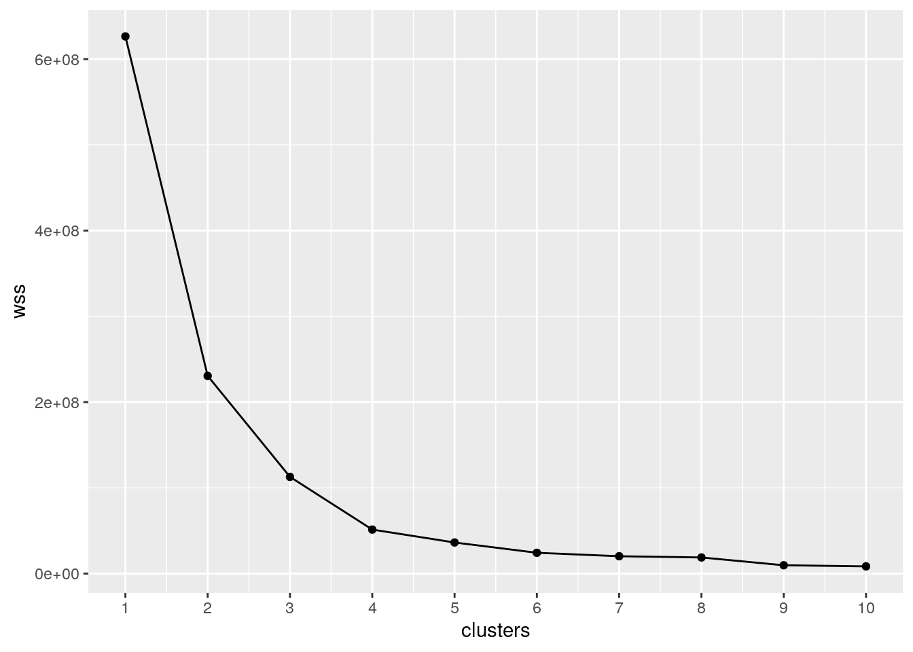

As COVID-19 continued into 2021, the new norm of staying indoors was still essential in order to keep yourself and others safe. It has now been a year since the pandemic started and many are trying to get their lives back to normal while still being cautious. In 2020, I spent most of my time indoors streaming shows and movies in order to keep myself sane. My new years resolution was to lose the weight I gained during 2020’s lockdown, which meant it was time to get off the couch and get some excercise and sunlight. In this project I decided to combine three datasets that can help me analyze if I have been more active or if I have continued my 2020 habits of streaming televesion. My first data came from my applewatch which included the number of steps taken in a day and the number of miles walked everyday, starting January 1st 2021 to March 31st 2021. The second data set included the number of movies watched and episodes watched in a day on Netflix, starting January 1st 2021 to March 31st 2021. The third dataset listed if the date was on a weekend or weekday. I expect to get a high number of steps and miles on the days that I do not watch a lot of Netflix and on the weekdays.
library(readr)
library(tidyr)
library(dplyr)
library(ggplot2)
library(cluster)
library(tidyverse)These are the packages needed in this project in order to begin coding.
health_data <- read_csv("health_data - Sheet1.csv")
netflix_history <- read_csv("netflix_history - Sheet1.csv")
weekend <- read_csv("weekend - Sheet1.csv")data <- merge(health_data, netflix_history) %>% merge(weekend)
glimpse(data)## Rows: 90
## Columns: 6
## $ Start <chr> "1-Feb-21", "1-Jan-21", "1-Mar-21", "10-Feb-21", "10-…
## $ `Distance (mi)` <dbl> 0.9742257, 0.6715221, 0.4667554, 0.8788821, 0.2188283…
## $ `Steps (count)` <dbl> 2638.000, 1838.000, 1284.000, 2201.000, 555.000, 2233…
## $ Episodes <dbl> 0, 0, 8, 2, 19, 13, 0, 9, 5, 1, 4, 5, 0, 0, 1, 0, 2, …
## $ Movies <dbl> 0, 0, 0, 0, 2, 0, 0, 0, 0, 1, 1, 0, 1, 0, 0, 0, 0, 0,…
## $ Weekday <chr> "yes", "yes", "yes", "yes", "no", "yes", "yes", "yes"…All three datasets were merged and the complete dataset was named “data”. The datasets were merged by the common column ‘Start’ which indicates which day the other variables occurred on.
untidy <- data %>% pivot_wider(names_from = "Weekday", values_from = "Start")
glimpse(untidy)## Rows: 90
## Columns: 6
## $ `Distance (mi)` <dbl> 0.9742257, 0.6715221, 0.4667554, 0.8788821, 0.2188283…
## $ `Steps (count)` <dbl> 2638.000, 1838.000, 1284.000, 2201.000, 555.000, 2233…
## $ Episodes <dbl> 0, 0, 8, 2, 19, 13, 0, 9, 5, 1, 4, 5, 0, 0, 1, 0, 2, …
## $ Movies <dbl> 0, 0, 0, 0, 2, 0, 0, 0, 0, 1, 1, 0, 1, 0, 0, 0, 0, 0,…
## $ yes <chr> "1-Feb-21", "1-Jan-21", "1-Mar-21", "10-Feb-21", NA, …
## $ no <chr> NA, NA, NA, NA, "10-Jan-21", NA, NA, NA, NA, NA, NA, …tidy <- untidy %>% pivot_longer(cols = c("yes", "no"), names_to = "Weekday",
values_to = "Start")
glimpse(tidy)## Rows: 180
## Columns: 6
## $ `Distance (mi)` <dbl> 0.9742257, 0.9742257, 0.6715221, 0.6715221, 0.4667554…
## $ `Steps (count)` <dbl> 2638.000, 2638.000, 1838.000, 1838.000, 1284.000, 128…
## $ Episodes <dbl> 0, 0, 0, 0, 8, 8, 2, 2, 19, 19, 13, 13, 0, 0, 9, 9, 5…
## $ Movies <dbl> 0, 0, 0, 0, 0, 0, 0, 0, 2, 2, 0, 0, 0, 0, 0, 0, 0, 0,…
## $ Weekday <chr> "yes", "no", "yes", "no", "yes", "no", "yes", "no", "…
## $ Start <chr> "1-Feb-21", NA, "1-Jan-21", NA, "1-Mar-21", NA, "10-F…The datasets were already tidy without having to alter their code. Therefore, I used pivot_wider to make the data untidy and then used pivot_longer to tidy the dataset again.
data %>% summarize_if(is.numeric, list(mean = mean, sd = sd,
min = min, max = max, quantile = quantile))## Distance (mi)_mean Steps (count)_mean Episodes_mean Movies_mean
## 1 1.293 3091.203 2.644444 0.2
## 2 1.293 3091.203 2.644444 0.2
## 3 1.293 3091.203 2.644444 0.2
## 4 1.293 3091.203 2.644444 0.2
## 5 1.293 3091.203 2.644444 0.2
## Distance (mi)_sd Steps (count)_sd Episodes_sd Movies_sd Distance (mi)_min
## 1 1.220368 2653.057 3.860812 0.4787624 0.1095415
## 2 1.220368 2653.057 3.860812 0.4787624 0.1095415
## 3 1.220368 2653.057 3.860812 0.4787624 0.1095415
## 4 1.220368 2653.057 3.860812 0.4787624 0.1095415
## 5 1.220368 2653.057 3.860812 0.4787624 0.1095415
## Steps (count)_min Episodes_min Movies_min Distance (mi)_max Steps (count)_max
## 1 288 0 0 7.994807 16666.73
## 2 288 0 0 7.994807 16666.73
## 3 288 0 0 7.994807 16666.73
## 4 288 0 0 7.994807 16666.73
## 5 288 0 0 7.994807 16666.73
## Episodes_max Movies_max Distance (mi)_quantile Steps (count)_quantile
## 1 19 2 0.1095415 288.000
## 2 19 2 0.4974857 1291.250
## 3 19 2 0.8021509 2073.000
## 4 19 2 1.6776408 4152.072
## 5 19 2 7.9948070 16666.734
## Episodes_quantile Movies_quantile
## 1 0 0
## 2 0 0
## 3 1 0
## 4 4 0
## 5 19 2data %>% group_by(Weekday) %>% summarize_if(is.numeric, list(ean = mean,
sd = sd, min = min, max = max, quantile = quantile))## # A tibble: 10 x 21
## # Groups: Weekday [2]
## Weekday `Distance (mi)_… `Steps (count)_… Episodes_ean Movies_ean
## <chr> <dbl> <dbl> <dbl> <dbl>
## 1 no 1.20 2870. 2.46 0.269
## 2 no 1.20 2870. 2.46 0.269
## 3 no 1.20 2870. 2.46 0.269
## 4 no 1.20 2870. 2.46 0.269
## 5 no 1.20 2870. 2.46 0.269
## 6 yes 1.33 3181. 2.72 0.172
## 7 yes 1.33 3181. 2.72 0.172
## 8 yes 1.33 3181. 2.72 0.172
## 9 yes 1.33 3181. 2.72 0.172
## 10 yes 1.33 3181. 2.72 0.172
## # … with 16 more variables: `Distance (mi)_sd` <dbl>, `Steps (count)_sd` <dbl>,
## # Episodes_sd <dbl>, Movies_sd <dbl>, `Distance (mi)_min` <dbl>, `Steps
## # (count)_min` <dbl>, Episodes_min <dbl>, Movies_min <dbl>, `Distance
## # (mi)_max` <dbl>, `Steps (count)_max` <dbl>, Episodes_max <dbl>,
## # Movies_max <dbl>, `Distance (mi)_quantile` <dbl>, `Steps
## # (count)_quantile` <dbl>, Episodes_quantile <dbl>, Movies_quantile <dbl>data %>% select(Weekday, Episodes, Movies) %>% mutate(episodes_norm = Episodes/mean(Episodes,
na.rm = TRUE))## Weekday Episodes Movies episodes_norm
## 1 yes 0 0 0.0000000
## 2 yes 0 0 0.0000000
## 3 yes 8 0 3.0252101
## 4 yes 2 0 0.7563025
## 5 no 19 2 7.1848739
## 6 yes 13 0 4.9159664
## 7 yes 0 0 0.0000000
## 8 yes 9 0 3.4033613
## 9 yes 5 0 1.8907563
## 10 yes 1 1 0.3781513
## 11 yes 4 1 1.5126050
## 12 yes 5 0 1.8907563
## 13 no 0 1 0.0000000
## 14 yes 0 0 0.0000000
## 15 no 1 0 0.3781513
## 16 no 0 0 0.0000000
## 17 yes 2 0 0.7563025
## 18 no 9 0 3.4033613
## 19 yes 0 0 0.0000000
## 20 yes 2 0 0.7563025
## 21 yes 2 0 0.7563025
## 22 yes 0 0 0.0000000
## 23 no 7 0 2.6470588
## 24 yes 4 1 1.5126050
## 25 yes 12 0 4.5378151
## [ reached 'max' / getOption("max.print") -- omitted 65 rows ]data %>% arrange(Weekday, Episodes, Movies)## Start Distance (mi) Steps (count) Episodes Movies Weekday
## 1 14-Feb-21 0.7657725 1918.000 0 0 no
## 2 2-Jan-21 1.0811486 3040.000 0 0 no
## 3 24-Jan-21 1.6872559 4379.000 0 0 no
## 4 27-Feb-21 0.6148903 1719.000 0 0 no
## 5 27-Mar-21 1.8246754 4050.289 0 0 no
## 6 30-Jan-21 0.4379051 1137.000 0 0 no
## 7 31-Jan-21 0.3101636 793.000 0 0 no
## 8 6-Feb-21 0.4204260 1109.000 0 0 no
## 9 7-Feb-21 0.4248253 1113.000 0 0 no
## 10 7-Mar-21 0.3427546 871.000 0 0 no
## 11 13-Feb-21 0.6889795 1827.000 0 1 no
## 12 20-Mar-21 1.7776940 4876.000 0 1 no
## 13 20-Feb-21 2.4859384 6281.000 0 2 no
## 14 13-Mar-21 2.0666522 4477.000 1 0 no
## 15 17-Jan-21 0.6438006 1842.000 1 0 no
## 16 21-Feb-21 2.1593149 5075.000 1 0 no
## [ reached 'max' / getOption("max.print") -- omitted 74 rows ]filter(data, Episodes > 12)## Start Distance (mi) Steps (count) Episodes Movies Weekday
## 1 10-Jan-21 0.2188283 555.000 19 2 no
## 2 10-Mar-21 0.9779432 2233.193 13 0 yes
## 3 20-Jan-21 0.5178570 1313.000 14 0 yesI used the function summarize() with summarize_if(is.numeric), to get the mean, standard deviation, minimum, maximum and quantile of all numeric variables in “data”. I then I used the function group_by() to group my data by the variable “Weekday” to determine the mean, standard deviation, minimum, maximum and quantile of all numeric variables for both Weekday and Weekend. Then I used the function select() to narrow down the variables I was going to work with to Weekday, Movies and Episodes. Once I did that, I used the function mutate() to have each numberic variable divided by the mean of that same variable. I then used the function arrange() with the variables Movies, Episodes and Weekday to sort my data given those variables. I then used the function filter() to isolate the days that I watched more than 12 episodes.
cormat <- data %>% select_if(is.numeric) %>% cor(use = "pair")
tidycor <- cormat %>% as.data.frame %>% rownames_to_column("var1") %>%
pivot_longer(-1, names_to = "var2", values_to = "correlation")
tidycor %>% ggplot(aes(var1, var2, fill = correlation)) + geom_tile() +
scale_fill_gradient2(low = "red", mid = "white", high = "blue") +
geom_text(aes(label = round(correlation, 2)), color = "black",
size = 4)I created a correltation heatmap by first coding the correlation between all four of my numeric variables. Then I used rownames_to_columns to move my variable titles into their own columns that way they can all come out on the x and y titles of the graph. I then graphed the heatmap by using the function ggplot(). I found that there was a large correlation between distance and steps, but a small correlation between all other variables.
ggplot(data, aes(Start)) + geom_bar(aes(y = Episodes, fill = Start),
stat = "summary", fun.y = "mean") + theme(axis.text.x = element_text(angle = 100,
hjust = 1)) + ylab("Episodes") + ggtitle("Episodes Watched in 2021") +
theme(legend.position = "none")I used ggplot() and geom_bar() to graph a bar graph showing the number of episodes watched everyday in 2021.
ggplot(data, aes(Episodes, Movies)) + geom_point(aes(color = Weekday)) +
xlab("Episodes") + ylab("Movies") + labs(colour = "Weekday?") +
theme(axis.text.x = element_text(angle = 50, hjust = 1)) +
ggtitle("Episodes & Movies watched throughout the week") +
theme(axis.line = element_line(colour = "black", size = 0.5,
linetype = "solid")) + scale_color_manual(values = c("#E79F00",
"#58B4E9"))I used ggplot() and geom_point() to compare the episodes watched to movies watched based on if it was on a Weekday or not.
wss <- vector()
for (i in 1:10) {
temp <- data %>% dplyr::select("Movies", "Episodes", "Steps (count)",
"Distance (mi)") %>% kmeans(., i)
wss[i] <- temp$tot.withinss
}
ggplot() + geom_point(aes(x = 1:10, y = wss)) + geom_path(aes(x = 1:10,
y = wss)) + xlab("clusters") + scale_x_continuous(breaks = 1:10)
clust_dat <- data %>% dplyr::select("Movies", "Episodes", "Steps (count)",
"Distance (mi)")
kmeans1 <- clust_dat %>% scale %>% kmeans(3)
kmeansclust <- clust_dat %>% mutate(cluster = as.factor(kmeans1$cluster))
kmeansclust %>% ggplot(aes(Movies, Episodes, color = cluster)) +
geom_point()pam1 <- clust_dat %>% pam(k = 3)
pamclust <- clust_dat %>% mutate(cluster = as.factor(pam1$clustering))
pamclust %>% ggplot(aes(Movies, Episodes, color = cluster)) +
geom_point()pamclust %>% group_by(cluster) %>% summarize_if(is.numeric, mean,
na.rm = T)## # A tibble: 3 x 5
## cluster Movies Episodes `Steps (count)` `Distance (mi)`
## <fct> <dbl> <dbl> <dbl> <dbl>
## 1 1 0.148 2.63 1507. 0.587
## 2 2 0.273 2.55 8712. 3.82
## 3 3 0.28 2.72 4040. 1.70I used ggplot() to determine the number of clusters that would work best with my data. I found that 3 clusters would work best by looking at the line graph. I used k means clustering and then PAM clustering.
sessionInfo()## R version 3.6.1 (2019-07-05)
## Platform: x86_64-pc-linux-gnu (64-bit)
## Running under: Ubuntu 18.04.5 LTS
##
## Matrix products: default
## BLAS: /stor/system/opt/R/R-3.6.1/lib/R/lib/libRblas.so
## LAPACK: /stor/system/opt/R/R-3.6.1/lib/R/lib/libRlapack.so
##
## locale:
## [1] LC_CTYPE=en_US.UTF-8 LC_NUMERIC=C
## [3] LC_TIME=en_US.UTF-8 LC_COLLATE=en_US.UTF-8
## [5] LC_MONETARY=en_US.UTF-8 LC_MESSAGES=en_US.UTF-8
## [7] LC_PAPER=en_US.UTF-8 LC_NAME=C
## [9] LC_ADDRESS=C LC_TELEPHONE=C
## [11] LC_MEASUREMENT=en_US.UTF-8 LC_IDENTIFICATION=C
##
## attached base packages:
## [1] stats graphics grDevices utils datasets methods base
##
## other attached packages:
## [1] forcats_0.5.0 stringr_1.4.0 purrr_0.3.4 tibble_3.0.4
## [5] tidyverse_1.3.0 cluster_2.1.0 ggplot2_3.3.3 dplyr_1.0.2
## [9] tidyr_1.1.2 readr_1.4.0
##
## loaded via a namespace (and not attached):
## [1] tidyselect_1.1.0 xfun_0.20 haven_2.3.1 colorspace_2.0-0
## [5] vctrs_0.3.6 generics_0.1.0 htmltools_0.5.0 yaml_2.2.1
## [9] utf8_1.1.4 rlang_0.4.10 pillar_1.4.7 glue_1.4.2
## [13] withr_2.3.0 DBI_1.1.0 dbplyr_2.0.0 modelr_0.1.8
## [17] readxl_1.3.1 lifecycle_0.2.0 munsell_0.5.0 blogdown_0.20
## [21] gtable_0.3.0 cellranger_1.1.0 rvest_0.3.6 evaluate_0.14
## [25] labeling_0.4.2 knitr_1.30 fansi_0.4.1 broom_0.7.3
## [29] Rcpp_1.0.5 backports_1.2.1 scales_1.1.1 formatR_1.7
## [33] jsonlite_1.7.2 farver_2.0.3 fs_1.5.0 hms_0.5.3
## [37] digest_0.6.27 stringi_1.5.3 bookdown_0.21 grid_3.6.1
## [41] cli_2.2.0 tools_3.6.1 magrittr_2.0.1 crayon_1.3.4
## [45] pkgconfig_2.0.3 ellipsis_0.3.1 xml2_1.3.2 reprex_0.3.0
## [49] lubridate_1.7.9.2 assertthat_0.2.1 rmarkdown_2.6 httr_1.4.2
## [53] rstudioapi_0.13 R6_2.5.0 compiler_3.6.1Sys.time()## [1] "2021-05-09 18:03:50 CDT"Sys.info()## sysname
## "Linux"
## release
## "4.15.0-142-generic"
## version
## "#146-Ubuntu SMP Tue Apr 13 01:11:19 UTC 2021"
## nodename
## "educcomp01.ccbb.utexas.edu"
## machine
## "x86_64"
## login
## "unknown"
## user
## "dl29746"
## effective_user
## "dl29746"